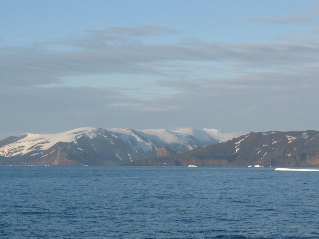
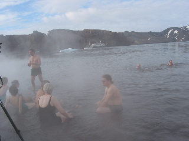
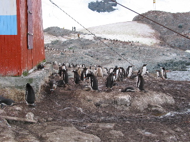
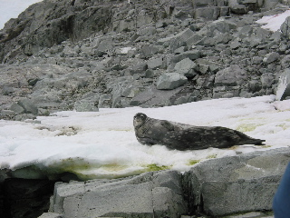
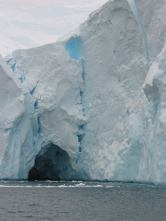
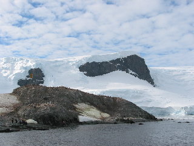

Day 4 — 2003/01/28
First landing: Deception Island
Landed at 6:15, made for an early morning. But we take what we can get. A fairly large place. Got its name since it looks like a big island, but if you approach part of it right, you can see it is a caldera. Place is still active, and thus smelled a bit of sulfer. There used to be a British base here, and one of the Expidition Staff members was stationed here for a time.

The thermals cause the beach water to steam up. And in places the sand feels hot enough to cook meat. (Atleast that is what you feet feel like when barefoot.) So you dig a spot out in the beach a little, and let the bay water come in and heat up. You end up sitting on the warm sand with cold water on one side of you and hot on the other.
Not much wildlife here, few penguins and a seal, but that was all.
Took pictures for a panoramic of this place. You can see the seem where the sun light changed while I was taking this.
Second landing: Mikkelson Harbor.
Tiny little rock island in center, Trinity, is filled with penguins. And we got to walk around with them, it was very neat. There is a building on the island, but I forget who put it there. (Argentina had it last, but I don't remeber if they were first.)

Also boated around the bay in the zodiacs. This was great fun. Got to see a Weddle and a Leopard seal up close!

Also, you cannot quite understand what the edge of the glacier cliffs is like until you are right up close to them. And even then we were staying a good distance away. Our driver also hauled a chunk of clear glacier ice that was floating by aboard. I understand they'll have it in the bar for drinks. If so I hope they have good scotch on board.

I can hardly begin to describe what it is like down here. Oh, thought I should mention, we are having some amazing weather so far. It has been for the most part calm and mostly sunny. I hear that not all trips are this clear, but then we have enough days left ahead of us still too....